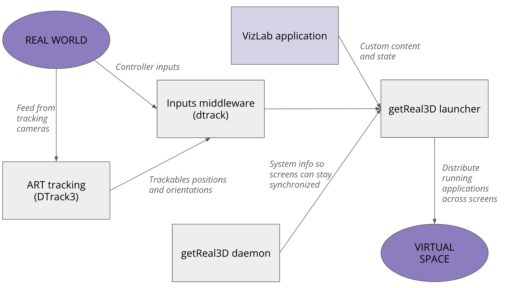

About VizLab software
Our software stack
For the VizLab to function, it takes several pieces of software working together. Included below is a diagram summarizing each piece and what it contributes to the overall stack.
{kind=link}
If you’re looking to write or modify a VizLab application, there’s more to touch on, but if you’re only looking to run existing VizLab software, then this is all you need!
getReal3D daemon
This application runs in the system tray and
DTrack3
DTrack3 is a software component from ART, the creators of the tracking cameras
Trackd
Not much to share here but say what is necessary!
Unity
C#, For the VizLab Unity project we’ve been developing here at Carnegie
Creating compatible Unity projects
Go through Ana’s list and add those instructions with pictures
Point to some good overall Unity resources (Unity documentation, CatlikeCoding, videos)
getReal3D
Using C# .NET packages
There’s a wealth of other libraries that can be easily integrated into your Unity project.
References and other resources
[1] DTrack3 manual, found at https://www.manualslib.com/manual/3050023/Art-Dtrack3.html